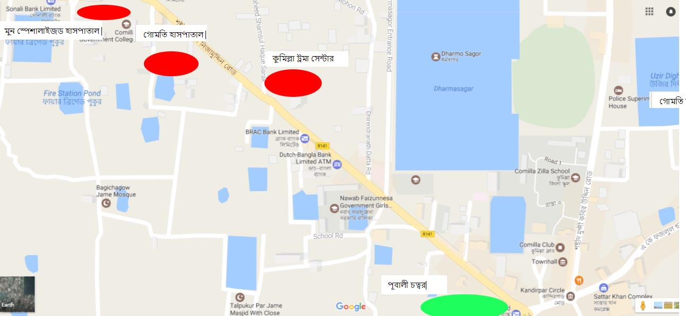

কুমিল্লার কিছু গুরুত্বপূর্ণ হাসপাতাল এর লিংক সমূহ নিছে দেয়া আছেঃ
মর্ডান হাসপাতাল কুমিল্লা
মুক্তি হাসপাতাল কুমিল্লা
ট্রমা হাসপাতাল কুমিল্লা
মিশন হাসপাতাল
সেন্ট্রাল হাসপাতাল
মুন হাসপাতাল
গোমতী হাসপাতাল